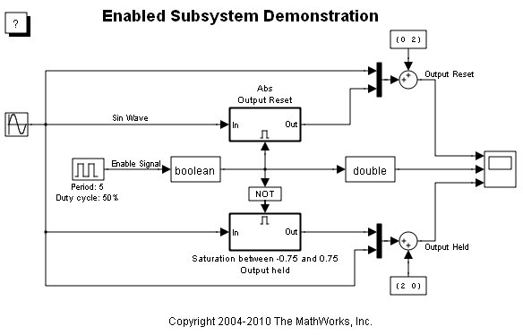
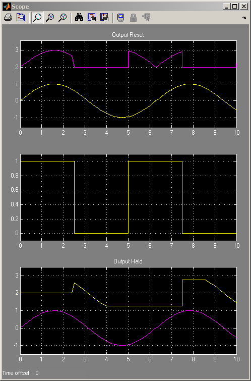

Enabled Subsystems
This demonstration shows what happens when a sign wave is fed into an enabled subsystem. After running the simulation, the scope shows three plots.
The first of these plots shows the original sine wave and the absolute value of the original sine wave offset by two. The absolute value of the sine wave is only shown when the subsystem is enabled. This occurs between 0 and 2.5 seconds and 5 and 7.5 seconds. When the subsystem is not enabled then the output of the subsystem is reset to 0. The value of 0 is determined by the initial condition of the outport. You can see when the subsystem is enabled by looking at the second plot. A value of 1 indicates that it is enabled.
The second plot shows the original value of the enable signal. If the signal is towards the top of the plot then the subsystem related to the first plot is enabled. If the signal is towards the bottom of the plot then the subsystem related to the third plot is enabled. The difference on when the subsystems are enabled is caused by the logical NOT block.
The third plot shows the original sine wave and the saturation limited sine wave offset by two. The saturated value of the sine wave is only shown when the subsystem is enabled. This occurs between 2.5 and 5 seconds and 7.5 and 10 seconds.
 